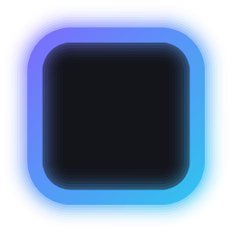

Everything you can do: the glow, music sync, effects, colors and lyrics.
Rimlight lives in the system tray (bottom-right, next to the clock; click ^ if you don't see the icon).
| Do this | What happens |
|---|---|
| Click the tray icon | Opens the settings panel. Click anywhere else (or press Esc) to close it. |
| Right-click the tray icon | Quick menu: light on/off, lyrics on/off, lyrics over apps, settings, quit. |
| Open Rimlight from Start or the Desktop | Also opens the settings. |
| Ctrl + Alt + L | Turn the light on / off |
| Ctrl + Alt + K | Turn lyrics on / off |
| Ctrl + Alt + O | Open / close the settings |
At the top of the settings, choose:
The light follows whatever's playing. Pick a Pattern:
Auto (recommended): changes pattern with the song's energy and flashes on drops SweepTwinMirrorBounceRippleRise (VU meter)BurstChasePulse
Beat sensitivity: higher = reacts to more beats, lower = only the strongest ones. Around 50 feels natural.
Fun effects that don't need music (also used between songs in Music Sync):
GlowRainbowAuroraCometFireOceanPoliceNeonHeartbeatSunsetCandyLava lamp
#FF2E88.| Display | Which screen glows (or All displays). |
| Thickness | From a hairline to a thick band. |
| Glow | How far the light spreads into the screen. |
| Brightness | Overall strength. |
| Corner radius | Auto = rounded on laptop screens, square on monitors. Or set it yourself. |
| Avoid taskbar | Keeps the bottom glow above the taskbar. |
Turn on Show lyrics (or press Ctrl+Alt+K). Lyrics appear in time with the song, word by word. Pick a Style and press Preview to try it:
| Picture | Your own picture becomes a living background (drifting, falling petals, floating lights) with glowing neon lyrics in its empty side. Neon colors are picked from your picture. Use Choose… to pick an image. |
| Album wallpaper | The album cover fills the screen, moving to the beat, with giant lyrics. |
| Constellation | Each word lands as a star on a night sky, joined by glowing lines, with comets, nebula clouds and shooting stars. |
| Card · Bold · Subtitle | Smaller styles: a floating glass card, big bold words, or a simple subtitle line. |
| No album colors | Press a volume key: your song should appear in the Windows media popup. If not, that app doesn't share what's playing. |
| Glow doesn't react to music | Check the right speakers/headphones are selected in Windows sound settings. The panel shows which device Rimlight is listening to. |
| Light is in the way | Press Ctrl+Alt+L, or turn on Avoid taskbar. |
| Lyrics stuck on screen | Press Ctrl+Alt+K, or right-click the tray icon → untick Lyrics. |
| Something else broke | Settings → Open logs, and send the rimlight.log file to the person who shared Rimlight with you. |